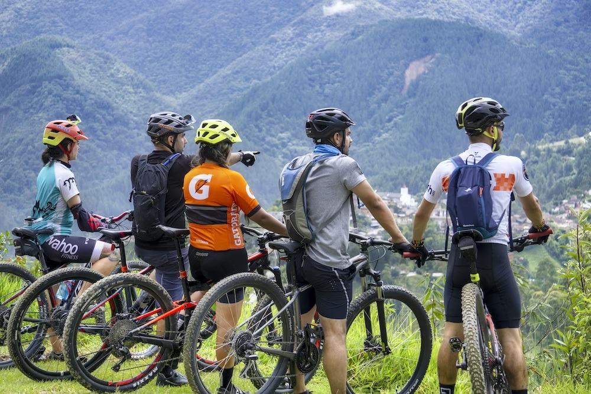
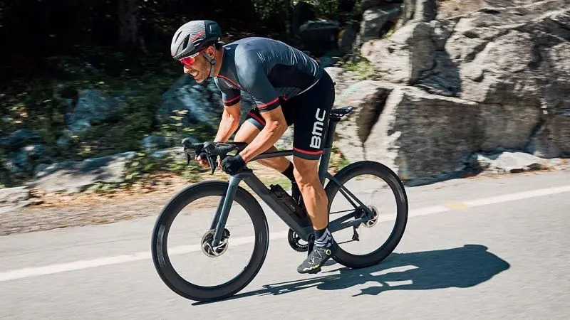
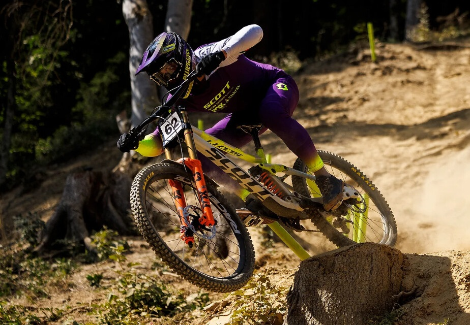

Ciclismo
Benefícios do Ciclismo para a Saúde
O ciclismo é uma excelente forma de exercício que traz uma série de benefícios para a saúde, incluindo:
- Melhora da saúde cardiovascular e circulação sanguínea.
- Aumento da resistência e força muscular.
- Redução do estresse e melhora do bem-estar mental.
- Controle do peso corporal e queima de calorias.
- Ajuda na redução do risco de doenças crônicas, como diabetes e doenças cardíacas.
Portanto, incluir o ciclismo em sua rotina diária pode ser uma maneira divertida e eficaz de melhorar sua saúde geral.
Variedade do Ciclismo

Tipo de pedal caracterizado por passeios ao longo de estradas, montanhas, regiões altas e belas paisagens. Nível técnico baixo, para amantes de um bom passeio

Tipo de pedal com foco em velocidade, competições e níveis técnicos mais altos!

Tipo mais esportista e perigoso, voltado para regiões montanhosas e íngremes, descidas em altas velocidas e níveis ténicos altos